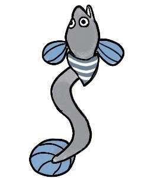
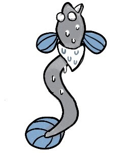
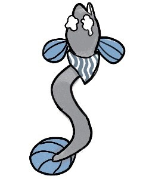

Stage 1 C言語プログラミングとは何か把握する
1-2 C言語とは？

タイトルからずっと付き纏ってるこの C 言語ってやつ？
これ一体なんなのさ
そうですね。その話をしないといけません。
1-1 では「プログラミングは人間の言葉を機械の言葉に翻訳すること」だということを抑えていただきました。ただ、人間の言葉にも日本語や英語、中国語などと種類があるのと同じように、機械の言葉にも種類があります。代表的なものを挙げてみると、大体こんなもんですかね。
- C
- C++
- C#
- Python
- Java
- JavaScript
- Ruby
- ...
日本語と英語で文法が全く違うのと同様に、こいつらの文法も大きく異なります。

全部覚えんの...?
使いたい言語は覚える必要がありますね。それこそ「中国語はやっておきたいけど、アラビア語はやらなくていっかな」みたいな感覚です。それに人間の言葉とは違って、機械の言葉は覚えなければいけないことが圧倒的に少ないですからご安心を。
~~~~~~~~~~~~~~~
で、C言語ってどんな言語なん？
一言で言うと、機械にとても優しい言語です。
いいねぇ「やさしい」って言葉好きよ
裏を返せば、人間にとっては優しくない言葉です。

C 言語と他の言語を比較すると、イメージで言えばこんな風になります。
| C言語 | 他の言語 |
|---|---|
| 鍋に水張って | 出汁とって |
| 出汁の顆粒入れて | |
| お玉でかき混ぜて | |
| 野菜を包丁で切って | 野菜煮立たせて |
| 野菜を鍋に入れて | |
| 煮たつまで待って | |
| 火止めて | 火止めてから味噌とかして |
| お玉で味噌溶かして | |
| 火つけて | 弱火で沸騰しない程度に煮込んで |
| 弱火にして | |
| お玉でかき混ぜて | |
| 沸騰しそうになるまで待って | |
| 火止めて | |
| 汁椀によそって | 汁椀によそって |
逐一こうしろああしろと指令を出してあげる必要があるわけです。
初心者なんだから最初からこんなめんどくせーのやらなきゃいいじゃん
と思われるかもしれませんが、実は言語によってこのレシピの省略の仕方が若干変わるんですよ。